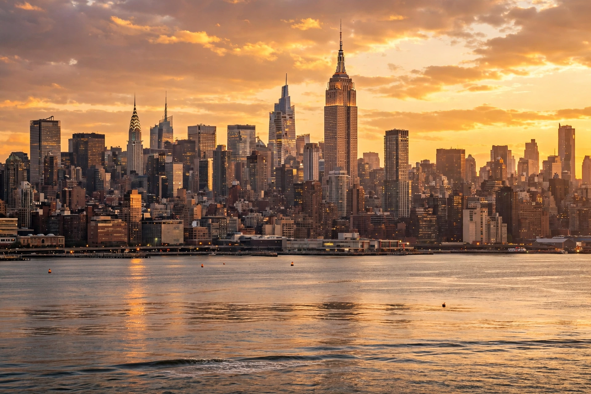

| Manhattan | |
|---|---|
 | |
| Borough of | New York City |
| County | New York County |
| Area | 33.6 sq mi (87 km²) total; 22.8 sq mi land |
| Population (2020) | 1,694,251 |
| Density | ~74,000/sq mi — highest of any U.S. county |
| Settled | 1624 (New Amsterdam) |
Manhattan is the most densely populated of the five boroughs of New York City and coextensive with New York County, the smallest county by land area in the contiguous United States. Located primarily on Manhattan Island at the mouth of the Hudson River, it is the historical, cultural, and economic heart of the city and of the New York metropolitan area, and is often described as the financial and cultural capital of the world.
The island was inhabited by the Lenape people — its name derives from the Lenape Manna-hata, often interpreted as "island of many hills" — before Giovanni da Verrazzano (1524) and Henry Hudson (1609) explored the region for European powers. The Dutch founded New Amsterdam in 1624–1626; the famous 1626 "purchase" of the island by Peter Minuit became a fixture of city lore. England seized the colony in 1664 and renamed it New York. Manhattan was the site of battles in the American Revolutionary War, the first capital of the United States (1785–1790), and the nation's largest port and immigrant gateway through the nineteenth century.
The Commissioners' Plan of 1811 imposed the street grid north of Houston Street. The opening of the Erie Canal (1825) and later the subway (1904) spurred explosive growth, and the island's skyline — the Woolworth, Chrysler, and Empire State Buildings — came to symbolize twentieth-century ambition. The September 11, 2001 attacks destroyed the World Trade Center in Lower Manhattan; the site was rebuilt with One World Trade Center, opened in 2014.
Manhattan is divided broadly into Lower, Midtown, and Upper Manhattan. Neighborhoods include the Financial District, Tribeca, Greenwich Village, Chelsea, Hell's Kitchen, the Upper East and Upper West Sides, Harlem, Washington Heights, and Inwood, plus Marble Hill on the mainland. Central Park (843 acres) occupies the island's center. The borough contains Lincoln Center, Broadway's theater district, Wall Street, Fifth Avenue, Columbia University, and New York University.
Manhattan is a global center of finance, media, publishing, advertising, fashion, and the arts, with the largest concentration of corporate headquarters in the United States. Its daytime population roughly doubles with commuters, and its real estate is among the most expensive on Earth.